1
ABRA O JOGO
Entre no endereço acima e toque em COMEÇAR A JOGAR.
É grátis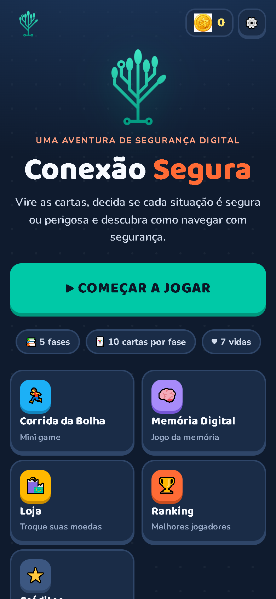
Vire as cartas. Aprenda a se proteger.
Navegue com segurança.
Em poucos passos, as crianças aprendem a se proteger
na internet jogando!
Entre no endereço acima e toque em COMEÇAR A JOGAR.
É grátis
Escolha um avatar e digite um apelido. Depois toque em VAMOS JOGAR.
Nada de nome real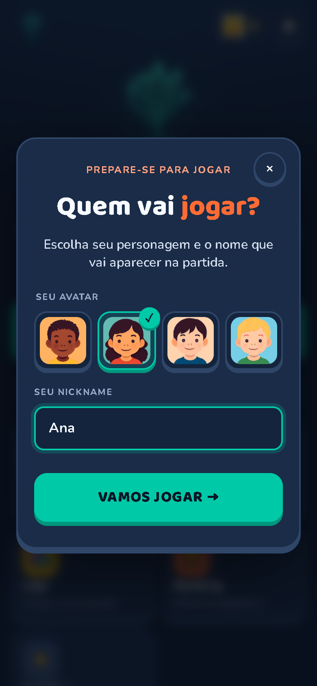
Toque na carta, leia a situação e escolha SEGURO ou PERIGOSO.
10 cartas por fase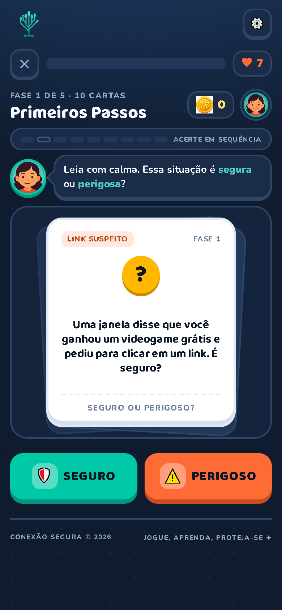
Seu personagem faz joinha e explica por que a resposta está certa. Você ganha moedas.
+ moedas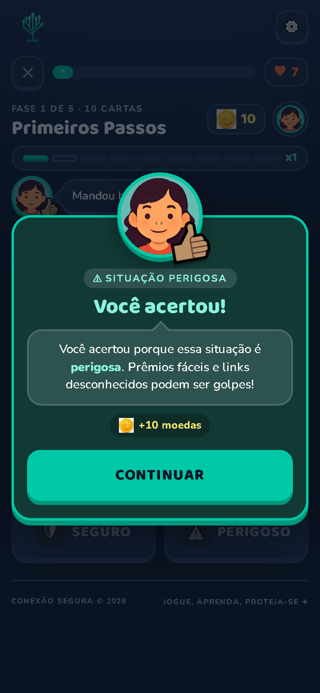
Tudo bem! O personagem explica o motivo. Você perde 1 vida e a carta volta no fim do baralho.
7 vidas por fase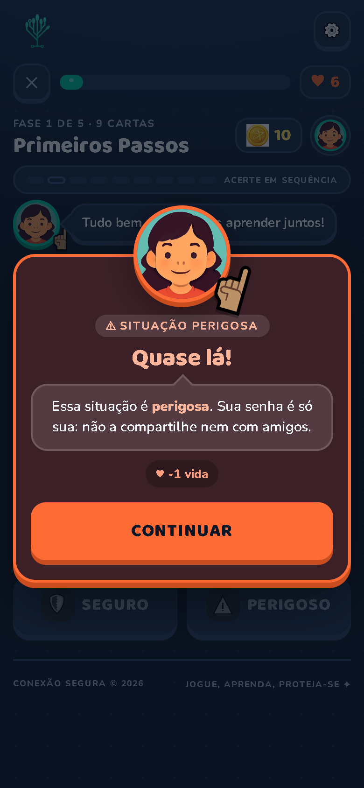
Complete as 5 fases. Cada uma é um pouco mais desafiadora que a anterior.
Fases 3 a 5 têm tempo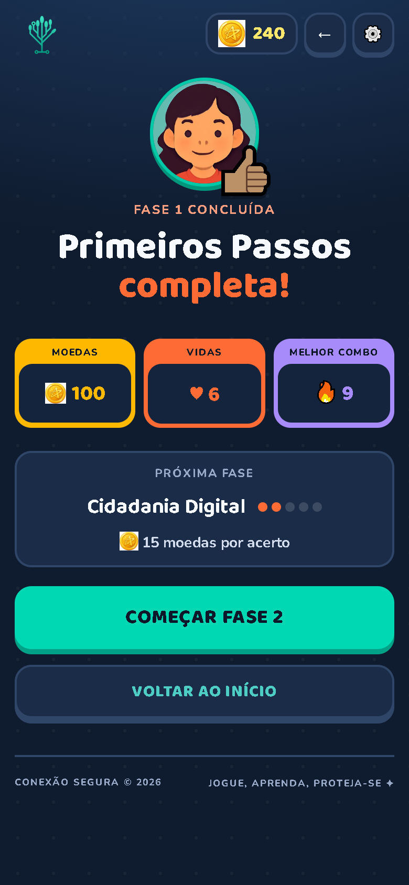
O jogo pede só um apelido: nada de nome completo, e-mail ou idade. Aproveite para ensinar que dados pessoais não se compartilham na internet.
Acerte várias seguidas: a barra de combo enche e a tela muda de cor (Em sequência, Pegando fogo, Imparável e Lendário).
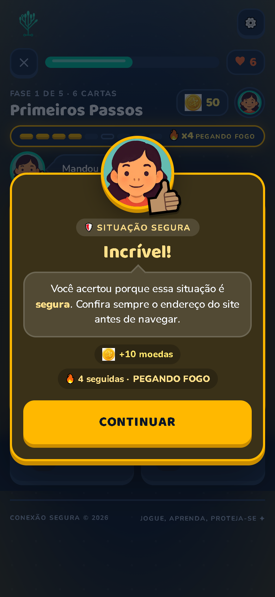
Ligue ou desligue sons, música e narração (lê as cartas em voz alta). O Modo calmo tira brilhos e movimentos.
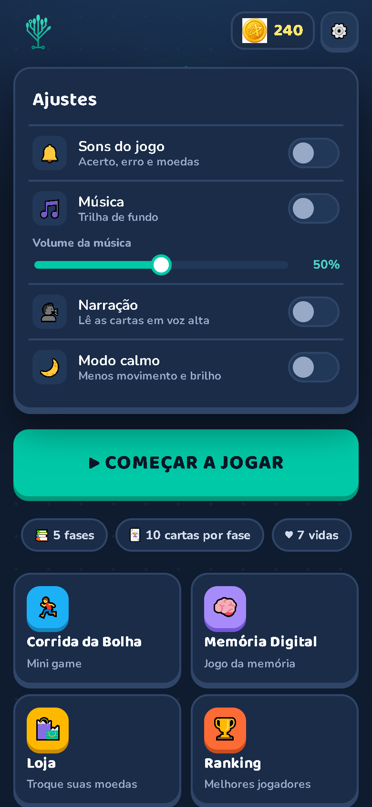
Vire as cartas e encontre os pares de boas práticas, como senha forte, backup e pedir ajuda.
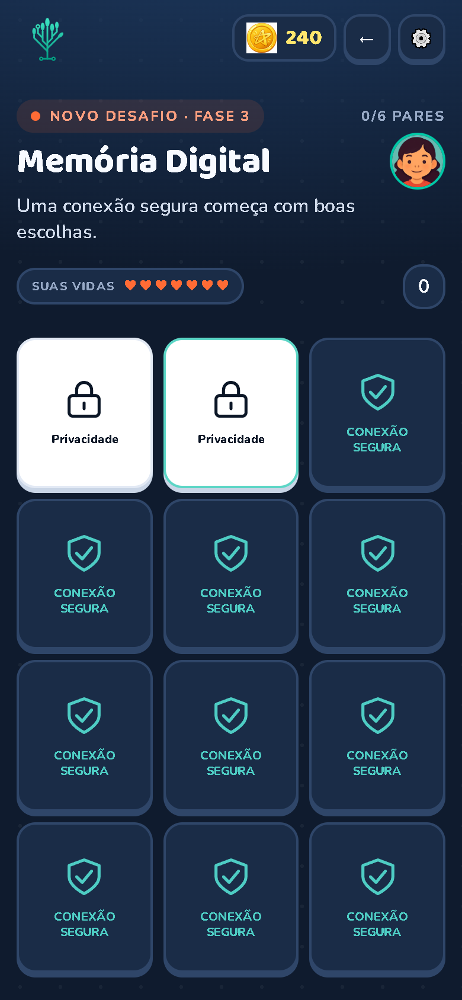
Mini game bônus: toque na tela (ou aperte espaço) para pular os obstáculos e chegar aos 5000 m.
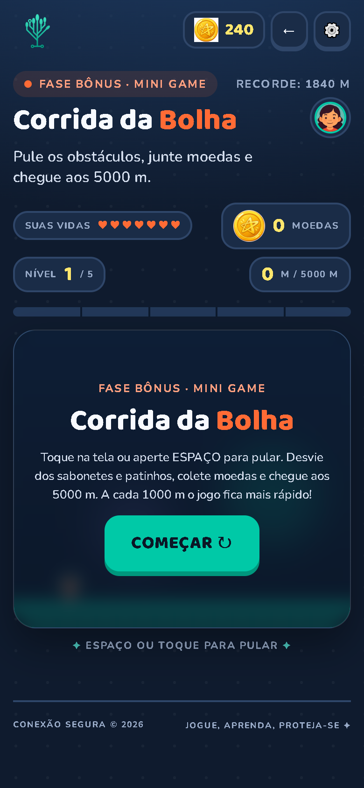
Troque as moedas ganhas por novos avatares, molduras e emblemas. Só moedas do jogo, sem dinheiro de verdade.
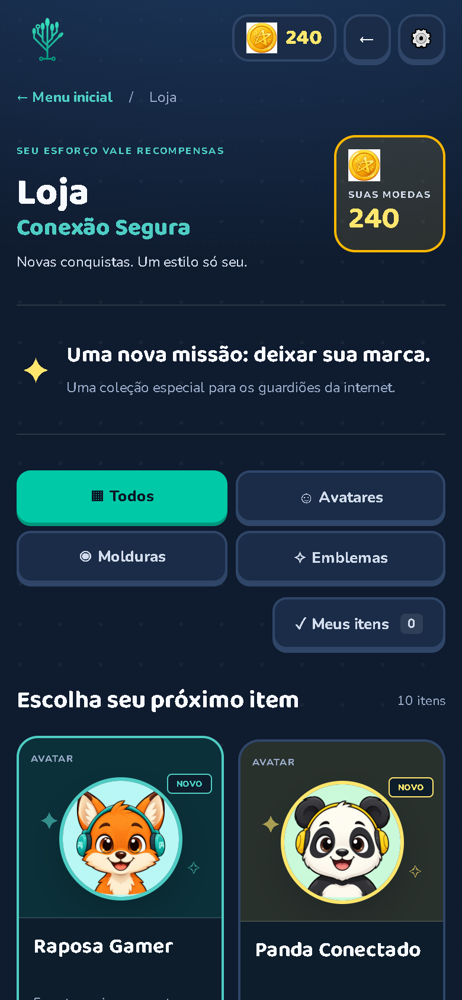
Mostra os jogadores com mais acertos e o recorde na Corrida da Bolha.
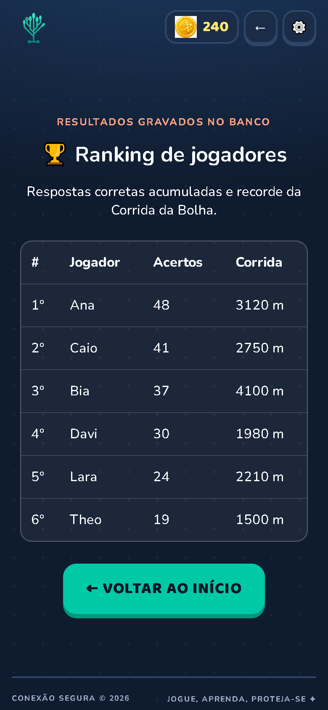